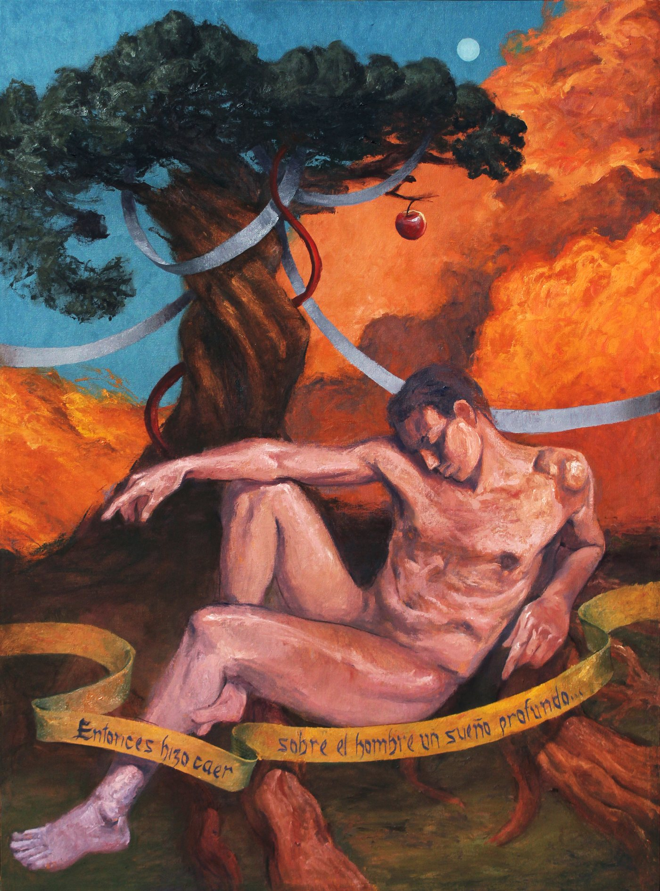

La Raíz
Malbec de Mendoza

Obra de Guillermo D’Anna, de Mendoza.
Historia de la etiqueta
El origen
Siete largos días con sus siete largas noches llegaron a su fin. El cansancio lo tumbó bajo un árbol de frutas, y el sueño cerró sus ojos. Había pasado las últimas horas solo, revelando los nombres de los animales.
Seguir leyendo
—Ese será un perro —dijo señalando a una criatura de cuatro patas—. Porque me recordará a Lélape y los galgos del Sur… y aquel otro será un caballo, porque me recordará al ecuestre Napoleón, a Marcos Aurelio, al infame Huno…
En ese momento una luz invisible bajó del sol atravesando el cielo hacia él. Adán, paralizado, podía percibir esa luz, y a él mismo. Podía verse a sí mismo desde afuera. Él como un espectador de sí.
Su respiración pesaba. Cualquier esfuerzo por mover los labios o los dedos era en vano. La luz, que ahora era un rayo, entraba lentamente en su cuerpo pulverizando una de sus costillas.
Él, que hasta entonces era uno solo, se dividió así en dos. Vio su propia carne, sus propios huesos, dividirse.
Ambas partes se miraron. Ambos, que compartían una misma memoria, se miraban como quien se ve en el reflejo del agua. Ambos pensaban que el otro era el reflejo.
El extraño nacimiento de otro. La simultánea creación del yo y del otro. Una diferencia primero sutil y luego enorme.
En los sueños, un tigre puede ser simultáneamente un caballo, sin ser una mezcla de un tigre con un caballo. De esa misma manera, ese yo y ese otro engendraron sin darse cuenta un otro, y luego otro. Con ellos nació la envidia y luego la muerte. Con la muerte nacieron otros y otros y otros.
Y esa descendencia vagó por los pasillos oscuros y profundos del inmenso laberinto del mundo. Engendrando así, primero los mitos y luego la Historia, la frágil paz y la inevitable guerra, los cultos y la ciencia.
Hay quienes hoy, entre tantos que poblaron la tierra, miran hacia atrás, más allá de Napoleón, de Huno y de Marcos Aurelio, más allá del terrible Moisés y del gran arca. Hay quienes hoy se preguntan si aquel hombre que durmió bajo aquel árbol de frutas no seguirá acaso dormido.
El artista
Guillermo D’Anna
[BIO: de dónde es, cómo trabaja, en qué se inspira. Idealmente escrita por él, en tres o cuatro líneas]
Para La Raíz pintó el momento de El origen en que Adán duerme bajo el árbol de frutas, justo antes de dividirse en dos. La cinta dorada que cruza la obra lo anuncia: «Entonces hizo caer sobre el hombre un sueño profundo...».
Técnica: [TÉCNICA Y MEDIDAS DE LA OBRA]
Qué representa La Raíz
La Raíz es nuestra primera línea, y por eso quisimos dedicarla a la primera etapa de todo proceso: el origen. Ese lugar donde algo nace y toma forma antes de mostrarse.
Como la raíz de la vid, que no se ve, pero sostiene todo lo que viene después.
El vino
- Varietal
- Malbec
- Origen
- Medrano, Mendoza
- Añada
- 2025
- Crianza
- Roble francés
- Alcohol
- 14,5 % vol.
- Edición
- 1.000 botellas
Cómo tomarlo
Rodeado de buena compañía.
Servilo entre 16 y 18 °C.
Acompañalo con un asado entre amigos, carnes a la parrilla, empanadas o quesos estacionados.
¿Querés más botellas?
Escribime y coordinamos el pedido.